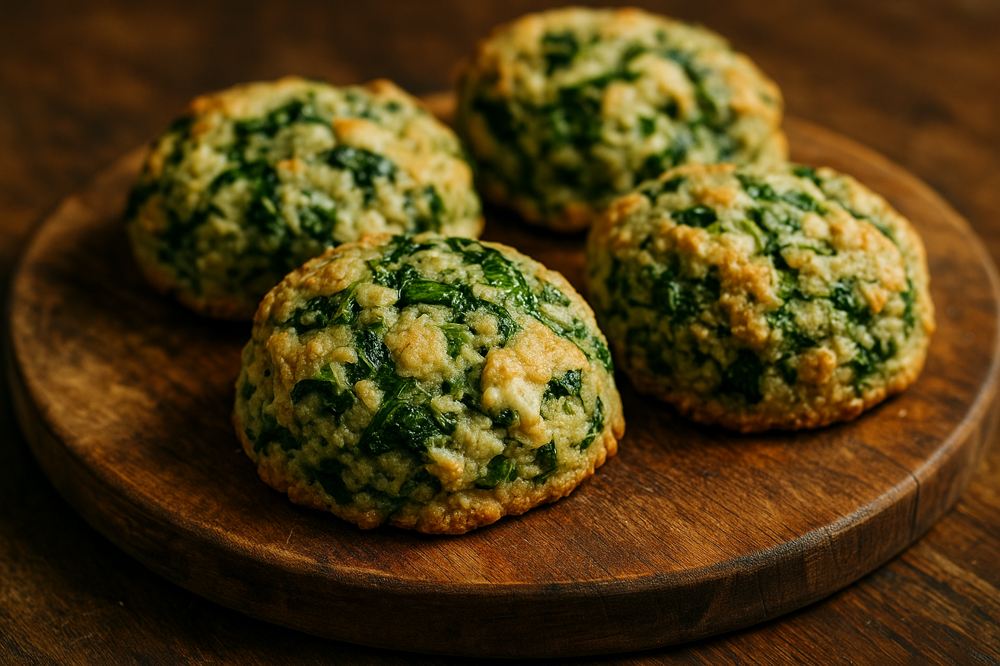

Balmora Cabbage Biscuits Recipe

Description
Savory and surprisingly hearty, Balmora Cabbage Biscuits are tender, oven-baked rounds bursting with shredded cabbage, fresh herbs, and subtle spices, they pair perfectly with stews or stand on their own as a humble but flavor-packed snack from Morrowind's culinary traditions.
Ingredients
- Small Green Cabbage
- Salt
- Vegetable Oil
- Black Pepper
- Salted Butter
- Milk
- Sugar
- Flour
- Eggs
- Instant Dry Yeast
- Heavy Cream
Steps
- Finely shred the cabbage.
- Place the shredded cabbage in a strainer over a mixing bowl.
- Sprinkle it generously with salt and let it sit for 30 to 60 minutes.
- Afterward, squeeze out as much liquid as you can and discard the excess moisture.
- Heat a little oil in a frying pan over medium heat.
- Add the shredded cabbage and season with black pepper.
- Cook until the cabbage softens and begins to brown slightly.
- Transfer the cooked cabbage to a medium mixing bowl.
- Add butter to the warm cabbage and stir until it melts.
- Pour in the milk and stir to combine.
- Add sugar, then sprinkle in the yeast.
- Beat in the egg.
- Gradually mix in flour until a soft, sticky dough forms and pulls away from the bowl.
- Knead the dough on a floured surface for several minutes, until it becomes smooth and springs back when poked.
- Place the dough in a lightly greased bowl, cover with a towel or plastic wrap, and let it rise in a warm spot for about 1 hour, or until doubled in size.
- Roll out the dough to about ¾ inch (2 cm) thick.
- Score the tops lightly in a checkered pattern using a sharp knife (for texture and appearance).
- Cut the dough into rounds using a biscuit cutter.
- Place the rounds on a lined or greased baking sheet.
- Let the shaped biscuits rise again for 20 minutes.
- Preheat the oven to 350°F (175°C) if you haven’t already.
- Brush the tops of the biscuits with heavy cream.
- Bake for about 20 minutes, or until golden brown on top.
Odin Recipes